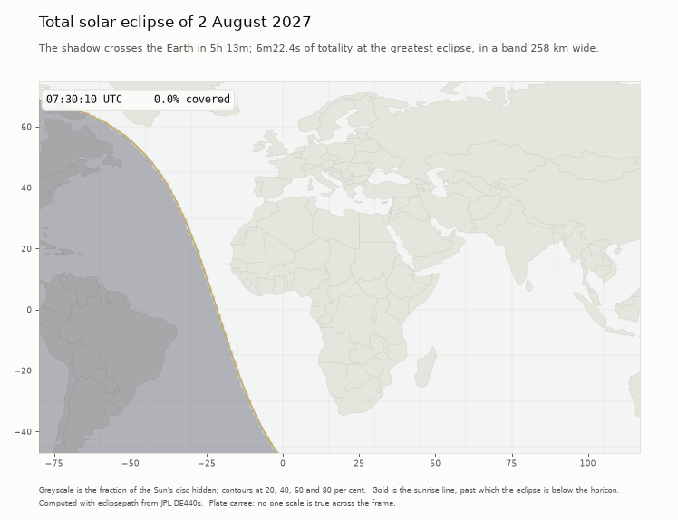

Eclipse globes
Solar eclipses computed from JPL DE440s with eclipsepath. Each globe is one self-contained page: drag to turn, wheel to zoom, scrub or play the eclipse through, and press Show the Moon for the shadow cone.
The shadow is not a texture. The page carries the Sun's and the Moon's positions at a sample a minute, and the fragment shader works out for every pixel how much of the Sun is covered at the point of the Earth under it — the same circle overlap the Python package uses. It agrees with it to 2.7×10−5, and puts the edge of totality within a metre.
Open the viewer → All six in one page, with a picker. Or take them one at a time:
Total, 2027-08-02
The flagship: six minutes of totality over Egypt, the longest on land this century so far.
- Greatest
- 10:06:41 UTC
- Max coverage
- 100.00%
- Central
- 6m22.4s
- Saros
- 136
Total, 2026-08-12
Iceland and Spain, at a high latitude and a low Sun — the grazing incidence that spreads the shadow along the ground.
- Greatest
- 17:45:57 UTC
- Max coverage
- 100.00%
- Central
- 2m18.1s
- Saros
- 126
Total, 2028-07-22
Across Australia and New Zealand, over the antimeridian: the case that cut every outline in two.
- Greatest
- 02:55:30 UTC
- Max coverage
- 100.00%
- Central
- 5m09.6s
- Saros
- 146
Annular, 2026-02-17
Annular over Antarctica. Coverage never reaches 1, and the path runs where a rectangular map is useless.
- Greatest
- 12:11:57 UTC
- Max coverage
- 92.73%
- Central
- 2m19.7s
- Saros
- 121
Hybrid, 2031-11-14
Hybrid: total along the middle of the track and annular at both ends, as the shadow cone reaches the ground or falls just short of it.
- Greatest
- 21:06:21 UTC
- Max coverage
- 100.00%
- Central
- 1m08.1s
- Saros
- 143
Partial, 2029-01-14
Partial everywhere. No umbra lands, so there is no path and nothing to draw but the coverage.
- Greatest
- 17:12:38 UTC
- Max coverage
- 81.59%
- Central
- none — partial everywhere
- Saros
- 151
The shadow on a flat map
The same geometry, cut the same way — coverage everywhere at each instant — drawn frame by frame from first to last contact. Greyscale is the fraction of the Sun hidden; the gold line is sunrise, past which the eclipse is below the horizon.
